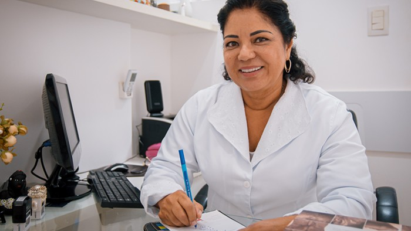
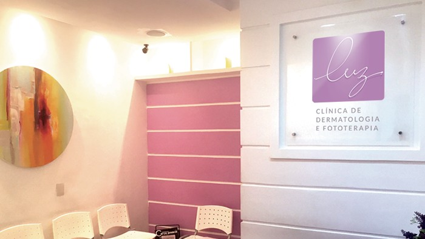
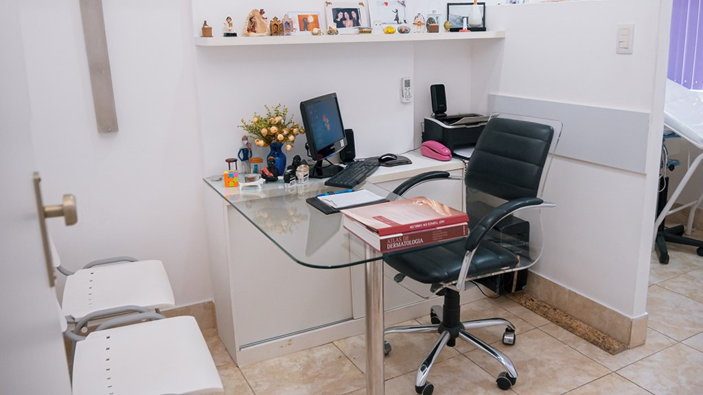
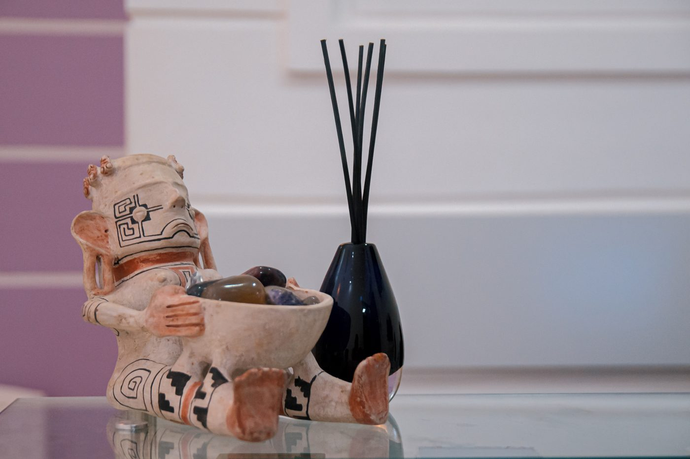

Diretora técnica
Dra. Ivonise Follador
Dermatologista · CRM-BA 7126 · RQE 2858 · sócia titular da SBD
Dermatologia e Fototerapia · Ondina, Salvador
Dermatologia clínica e fototerapia para psoríase, vitiligo, dermatite atópica e linfoma cutâneo. A diretora técnica, Dra. Ivonise Follador, é dermatologista, ex-presidente da SBD Regional Bahia e coordenadora geral do Manual Prático de Fototerapia da Sociedade Brasileira de Dermatologia.

Por onde começar
Cada página reúne informação geral sobre uma condição tratada na Clínica Luz e o papel da fototerapia nela. O que vale para cada pessoa se decide em consulta.
Uma doença crônica e não contagiosa, com várias opções de tratamento e acompanhamento.
Ler sobre psoríaseCondiçãoInformação e acolhimento, sem promessas: cada caso é um caso.
Ler sobre vitiligoCondiçãoPele seca, coceira e crises: o cuidado de todos os dias e quando a luz entra.
Ler sobre dermatiteTratamentoO que é, como é a sessão na cabine e os cuidados durante o tratamento.
Conhecer a fototerapiaTambém: linfoma cutâneo de células T · acne, alopecias e dermatologia clínica · a Dra. Ivonise e a equipe
A luz, faixa por faixa
“Fototerapia é a utilização da luz para tratamentos médicos”, explica o texto da clínica. Lâmpadas especiais emitem só a radiação desejada para cada tratamento e doença. Texto da Clínica Luz
Uma faixa estreita do ultravioleta B, aplicada em cabine, em sessões curtas e progressivas.
O ultravioleta A associado a um medicamento fotossensibilizante (psoraleno), com cuidados próprios.
O tipo de fototerapia e a duração do tratamento dependem da doença, da área e de outras características avaliadas na consulta.
Como funciona a fototerapiaFototerapia com parâmetros
Em 2020, a Sociedade Brasileira de Dermatologia lançou o Manual Prático de Fototerapia, com parâmetros para o uso correto da fototerapia nos serviços de dermatologia. Na coordenação geral, a professora Ivonise Follador, da UFBA, e o então presidente da SBD, Sérgio Palma. Na ficha do manual, ela aparece como idealizadora e coordenadora do projeto.
“Este Manual Prático de Fototerapia é um projeto idealizado há alguns anos que finalmente se concretiza. Sinto-me muito honrada e alegre em poder coordenar este trabalho.”Dra. Ivonise Follador, em notícia oficial da SBD
Na cabine
Para a Dra. Ivonise, os técnicos que fazem o manejo diário das máquinas, de preferência da área de enfermagem, precisam ser muito bem treinados.
“Devem ser orientados e preparados para atuarem com cuidado e dedicação, adotando, igualmente, postura ética e humanizada na sua relação com pacientes e outros profissionais.”Dra. Ivonise Follador · notícia da SBD

A diretora técnica
Dermatologista (RQE 2858), sócia titular da Sociedade Brasileira de Dermatologia, sócia-administradora da Clínica Luz desde a abertura, em 2007, e diretora técnica da clínica. No Serviço de Dermatologia do Complexo Hospitalar Universitário Professor Edgard Santos (HUPES-UFBA), foi preceptora e chefe da residência médica de Dermatologia.
A equipe
A equipe, como apresentada no site da clínica. A recepção agenda as consultas das três médicas.
Dermatologista · CRM-BA 7126 · RQE 2858 · sócia titular da SBD
CRM-BA 15228 · RQE 6865 · sócia titular da SBD
CRM-BA 15669 · RQE 8375 · sócia titular da SBD · graduada pela UFBA
Nas palavras da clínica
“É importante saber que o vitiligo não define a identidade, o valor ou a beleza de ninguém. […] O preconceito, sim, é o verdadeiro problema, combatê-lo exige informação, empatia e respeito.”Instagram @clinica_luz
“O tipo de fototerapia e a duração do tratamento dependem da doença, da área e de outras características que o especialista decide durante a avaliação clínica.”Texto “A Clínica Luz”
“Cada caso é um caso, os quadros não são todos extensos nem graves […]”Texto da clínica sobre vitiligo
No Google
Sete avaliações públicas na ficha da Luz Clínica de Dermatologia & Fototerapia no Google. Dois trechos, com os nomes abreviados:
Atendimento excelente da dra Ivonise […]
Tanto da recepção, como das médicas.
Pesquisa
No PubMed, 24 registros com a Dra. Ivonise como autora, de 1999 a 2024: psoríase no HUPES, vitiligo e leishmaniose na Bahia. Alguns deles:
A clínica
Paredes lilás, muita luz e a cabine de fototerapia: a Clínica Luz funciona no Centro Médico e Empresarial (CME), na Av. Anita Garibaldi.



Clínica LuzAv. Anita Garibaldi, 1815 · CME — Centro Médico e Empresarial, bloco B, sala 412 · Ondina · Salvador – BA · CEP 40170-130
Perguntas frequentes
Pelo WhatsApp da recepção, (71) 98738-3819, ou pelos telefones (71) 3237-3631 e (71) 3332-3977. O atendimento é com hora marcada.
Sim. A fototerapia é um tratamento médico: a indicação, o tipo de luz, a dose inicial e a frequência das sessões são definidos pela dermatologista, depois da avaliação.
Segundo o texto da clínica, a fototerapia é indicada principalmente para psoríase, vitiligo, dermatite atópica e linfoma cutâneo de células T. A indicação é individual, definida em consulta.
Três dermatologistas, como apresentado no site da clínica: a diretora técnica, Dra. Ivonise Follador, a Dra. Bianca Costa e a Dra. Cristiana Mendonça.
No CME — Centro Médico e Empresarial, Av. Anita Garibaldi, 1815, bloco B, sala 412, em Ondina, Salvador.
O atendimento é com hora marcada. Confirme os dias e os horários de consulta e de fototerapia com a equipe ao agendar.
Agende
CME, Av. Anita Garibaldi, 1815, bloco B, sala 412. Agende pelo WhatsApp da recepção ou pelos telefones (71) 3237-3631 e (71) 3332-3977.